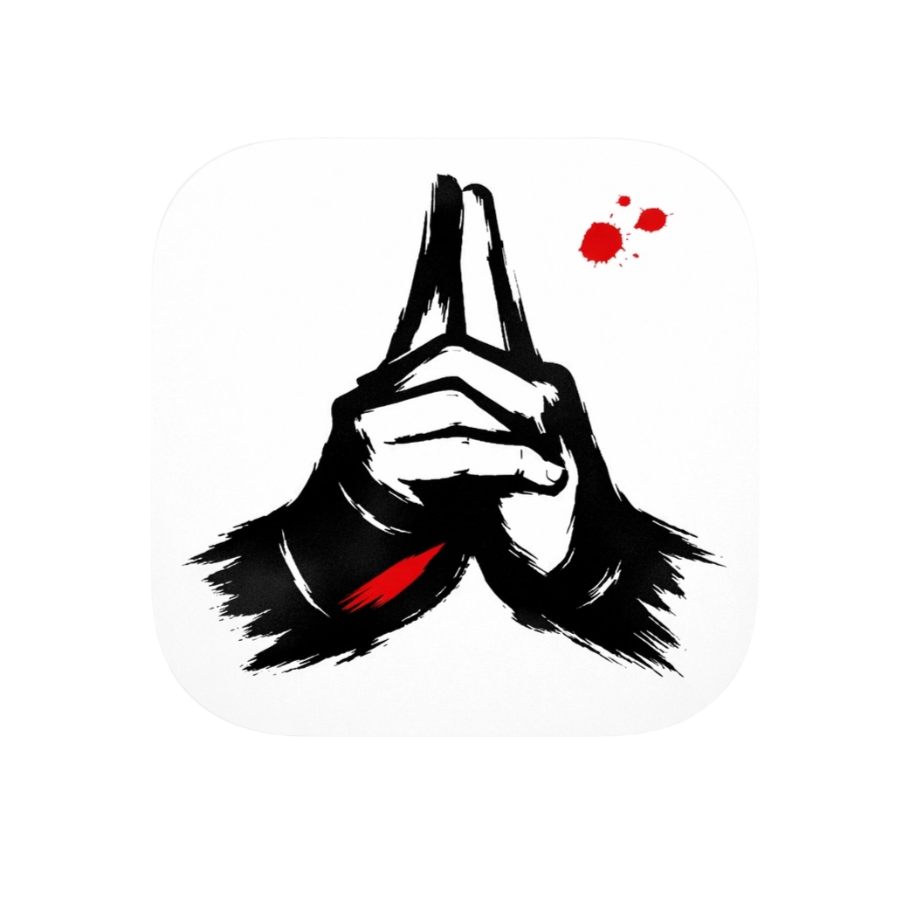
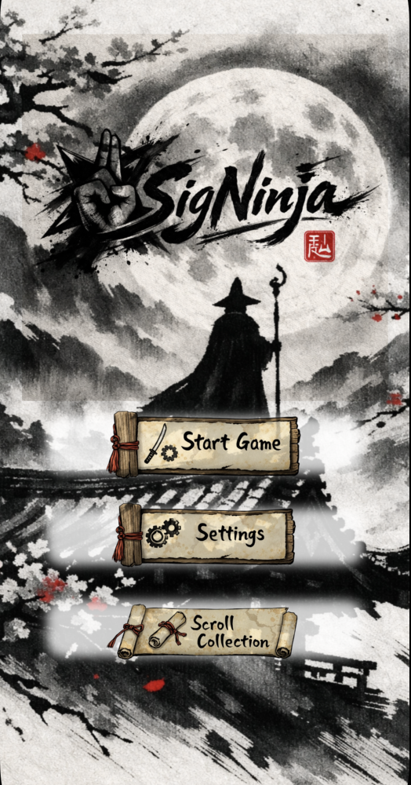
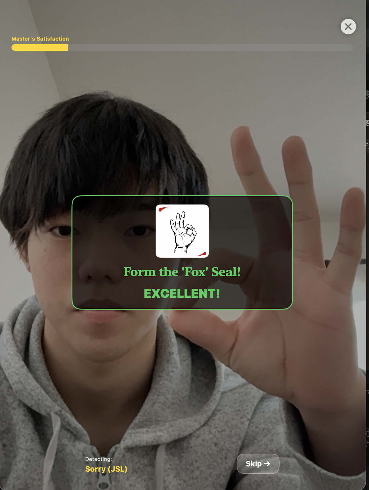
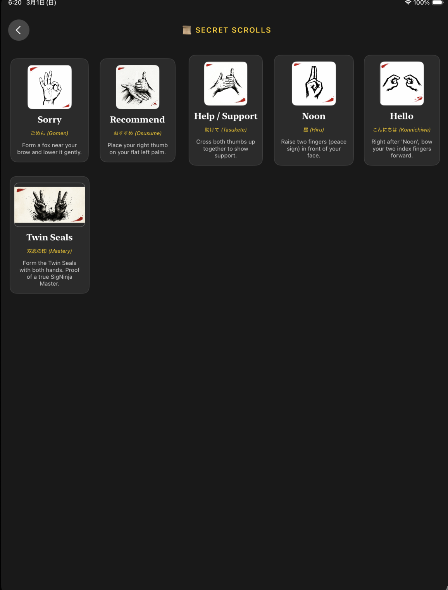

SigNinja
個人開発 · Swift Student Challenge 2026 提出作
「手話学習のハードルを下げる — 修行のように、手で覚える。」
日本手話（JSL）を身体で覚えるためのiOSアプリ。Visionフレームワークが手のポーズをリアルタイムで認識し、忍者修行というメタファーの中で、ユーザーが実際に「印を結び」ながら学習する体験を構築しました。
SwiftUI
Vision
CoreML
AVFoundation
現在、App Storeリリースに向けて開発中
INIT

UI / ONBOARD
ANALYSIS
▮

SIGNS

48 SIGNS